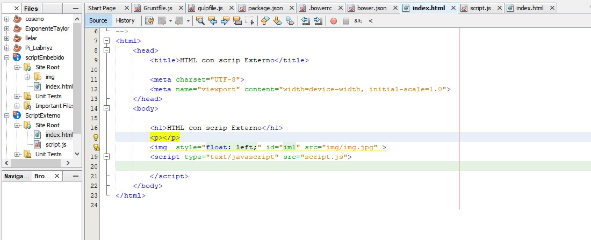

A continuacion tenemos una imagen que nos muestra la pagina HTML, en ella usamos la etiqueta de script y dentro de ella el src el cual no redirecciona o invoca el archivo script con extecion .js
En la imagen observamos el contenido del archivo .js el cual se invoca en medio de la estiqueta scritp como se puede apreciar en la imagen anterior